Profil & Objectifs
Formé en Génie Mécanique et Productique, passionné par de multiples domaines de l'industrie en général, par le sport automobile, mais également par des secteurs tels que le nautisme et la manutention, j'ai pour objectif de créer ma carrière professionnelle au cœur de ces environnements techniques et exigeants.
Vidéo de présentation
Parcours Académique
BUT Génie Mécanique et Productique (GMP)
IUT d'OrléansSpécialisation : Simulation numérique et réalité virtuelle
Formation d'ingénierie appliquée couvrant l'ensemble du cycle de vie d'un produit mécanique, de la conception préliminaire jusqu'à la fabrication industrielle et la validation numérique :
- ▪ Conception Assistée par Ordinateur (CAO 3D) : Modélisation paramétrique avancée, gestion d'assemblages complexes, génération d'éclatés et mises en plan normalisées avec tolérancement ISO.
- ▪ Simulation Numérique & Réalité Virtuelle : Calcul de structures par éléments finis (FEA), étude des contraintes mécaniques, simulations cinématiques et intégration en environnements immersifs.
- ▪ Mécanique & Résistance des Matériaux : Dimensionnement analytique en statique, cinématique, dynamique et calculs de résistance (traction, compression, flexion, torsion, flambement).
- ▪ Méthodes de Fabrication & Métrologie : Procédés d'usinage conventionnel et à commande numérique (CNC), élaboration de gammes d'usinage et contrôle qualité dimensionnel rigoureux.
Baccalauréat Général
Lycée Durzy — VillemandeurSpécialités Mathématiques & Sciences de l'Ingénieur (SI) — Section Européenne Anglais
Cursus scientifique orienté vers les sciences appliquées, l'approche système et la maîtrise linguistique :
- ▪ Sciences de l'Ingénieur (SI) : Analyse fonctionnelle, modélisation multiphysique de systèmes automatisés, électronique de commande et cinématique.
- ▪ Section Européenne Anglais : Pratique soutenue de l'anglais technique et scientifique appliquée à l'ingénierie, permettant l'obtention d'un niveau C1 (autonome / avancé).
- ▪ Projet Technique Collaboratif : Développement d'une invention en équipe sur plusieurs mois, récompensée par une qualification en finale académique.
Projets & Réalisations
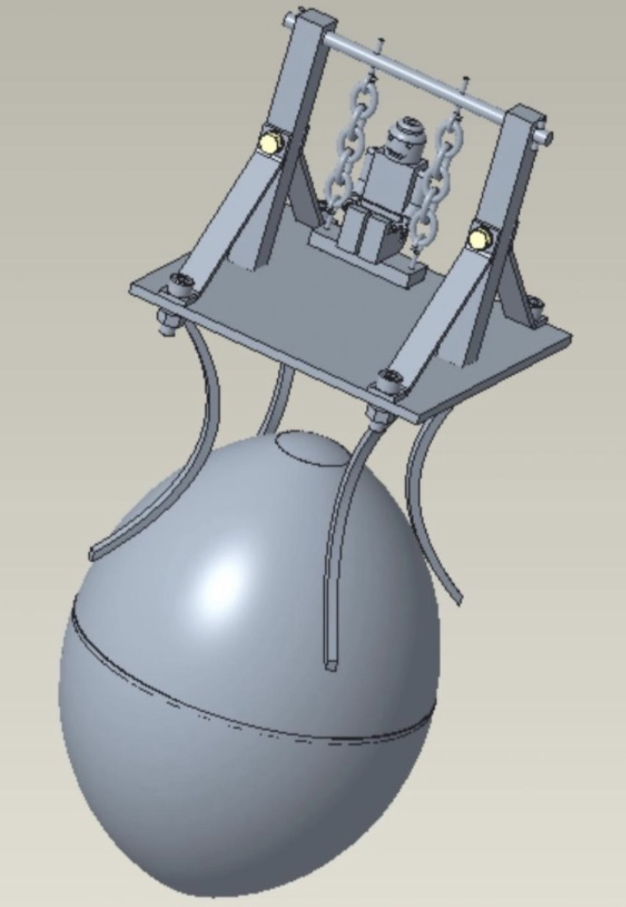
Balançoire "Œuf Surprise"
1. Contexte
Projet de réalisation pratique mené au sein de l'atelier de fabrication mécanique de l'IUT dans le cadre du BUT GMP.
2. Objectifs
Créer un ensemble mécanique complet et fonctionnel, la balançoire.
3. Cahier des charges
- Respecter rigoureusement les deadlines et rendus demandés par nos encadrants.
- Utiliser un maximum de procédé de fabrication différents.
- Le systeme se devait d'etre démontable et rangeable dans "L'Oeuf Surprise".
4. Bilan et difficultés rencontrées
La difficulté majeure a résidé dans la précision des réglages machines et les ajustements finaux pour assurer la fluidité du mécanisme.
5. Analyse et réflexion
J'ai pu mesurer l'importance de la rigueur et de la métrologie dans le processus de fabrication. Cela donne un vrai sens à la conception CAO.
Résumé en images du procédé

1. Modélisation CAO
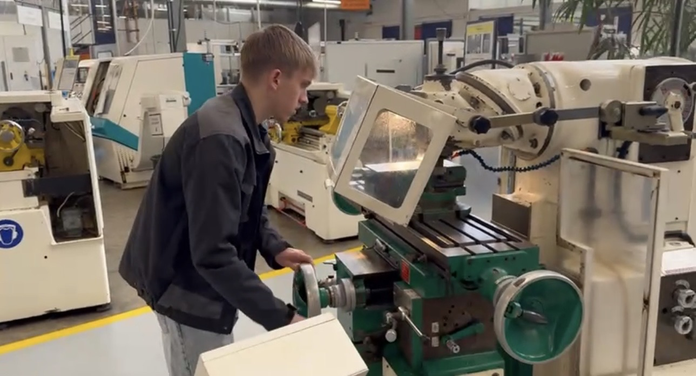
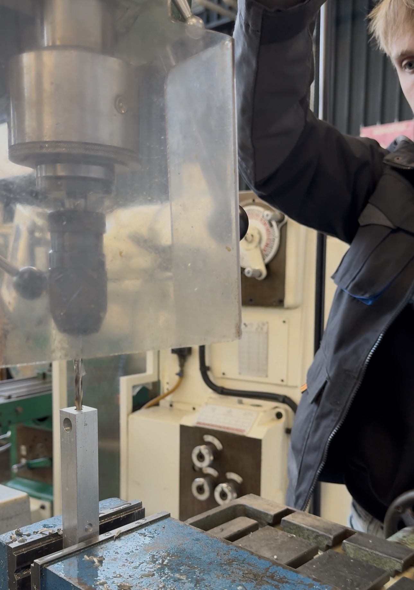
2. Usinage & Perçage
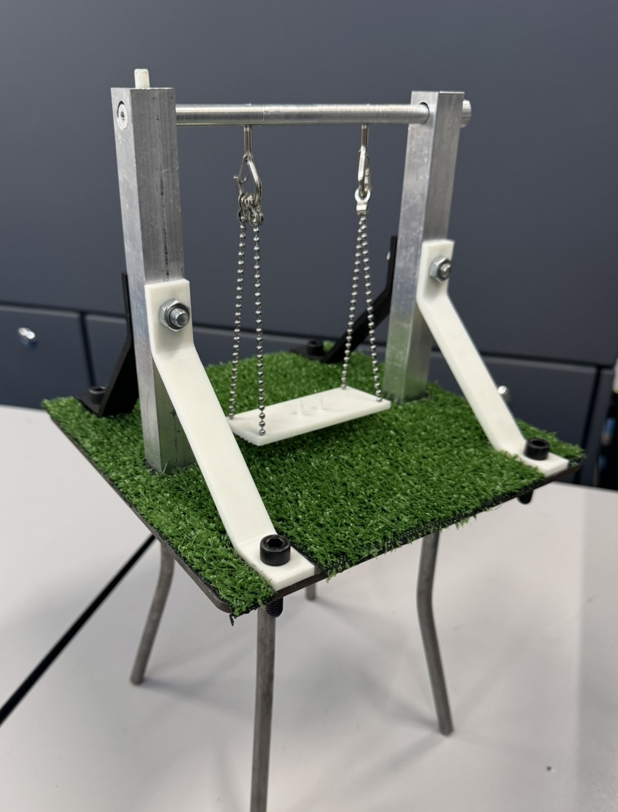
3. Pièce finale assemblée
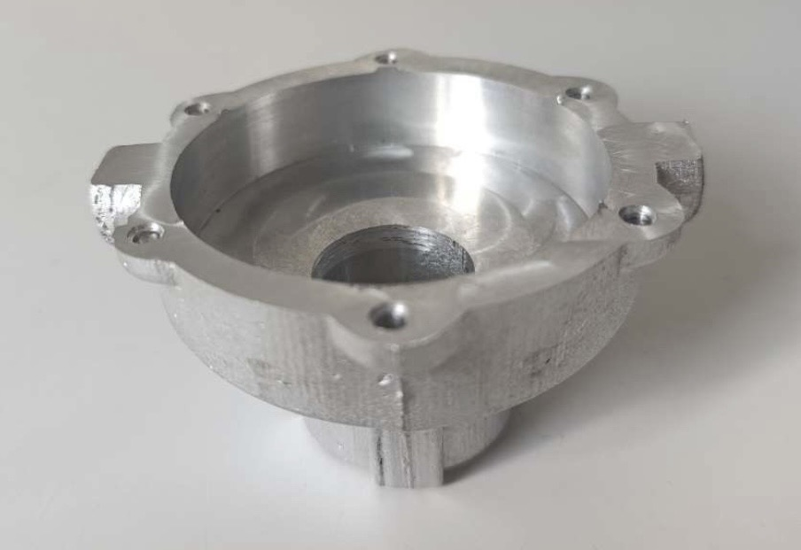
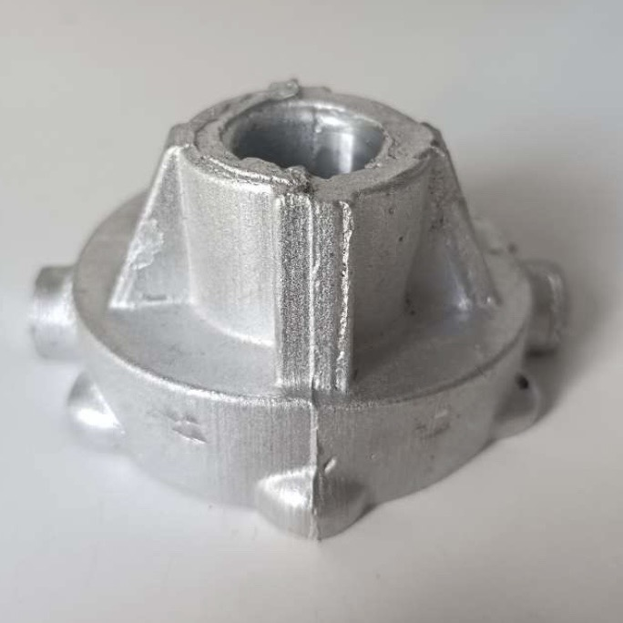
Industrialisation d'une pièce en fonderie avec impression 3D
1. Contexte
Ce projet illustre l'ensemble du processus d'industrialisation d'une pièce mécanique. L'enjeu était de partir d'un besoin pour arriver à une pièce finie et fonctionnelle, en combinant des procédés de fabrication modernes (fabrication additive) et traditionnels (fonderie, usinage).
2. Objectifs
Maîtriser la chaîne numérique de bout en bout. Il s'agissait de concevoir les outillages de fonderie, de réaliser le brut par coulée, de préparer la gamme d'usinage sur TopSolid et de fabriquer la pièce finale tout en concevant un montage d'usinage adapté.
3. Cahier des charges
- Modélisation CAO des demi-moules, demi-modèles et boîtes à noyaux.
- Impression 3D des demi-modèles et des boîtes à noyaux.
- Réalisation de la phase de fonderie pour obtenir la pièce brute.
- Conception CAO/FAO sur TopSolid incluant la réflexion sur le montage d'usinage.
- Usinage final du brut pour obtenir la pièce fonctionnelle respectant les tolérances.
4. Bilan et difficultés rencontrées
Nous avons réussi à obtenir notre pièce fonctionnelle. Ce travail a été particulièrement complexe de par la diversité des compétences requises (CAO, impression 3D, fonderie, FAO, usinage). Les principaux obstacles rencontrés se sont situés au niveau de la maîtrise des différents logiciels et de la bascule entre eux.
5. Analyse et réflexion
Ce projet transversal m'a permis de comprendre l'importance d'anticiper la phase finale (le maintien et l'usinage) dès la conception initiale des outillages de fonderie. Les difficultés logicielles rencontrées ont été très formatrices pour développer ma capacité d'adaptation technique.
Résumé en images du procédé
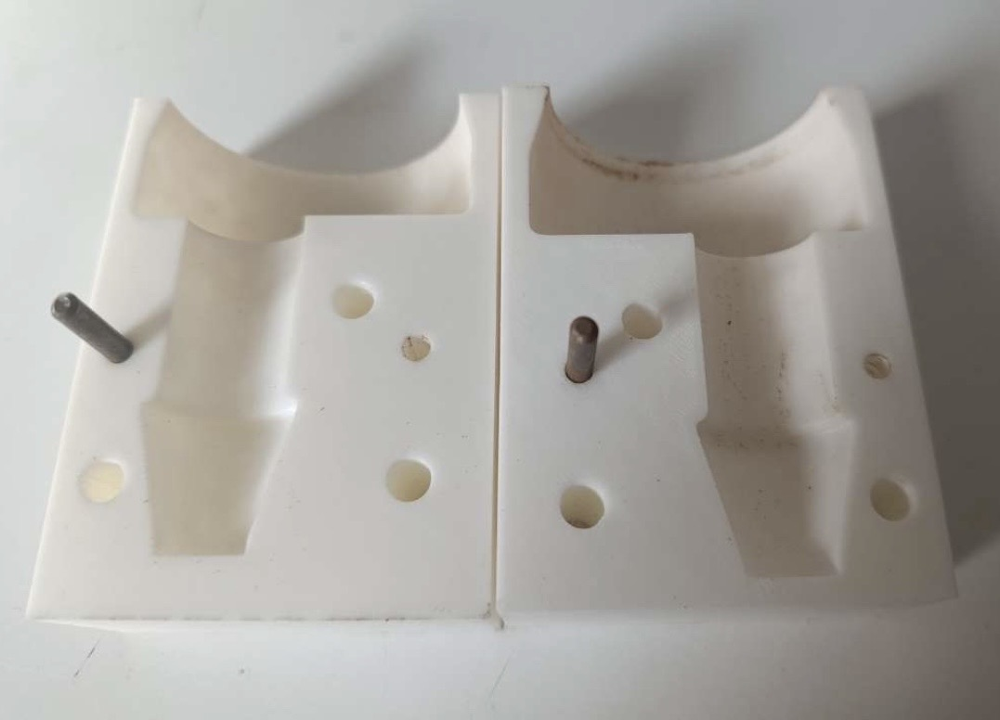
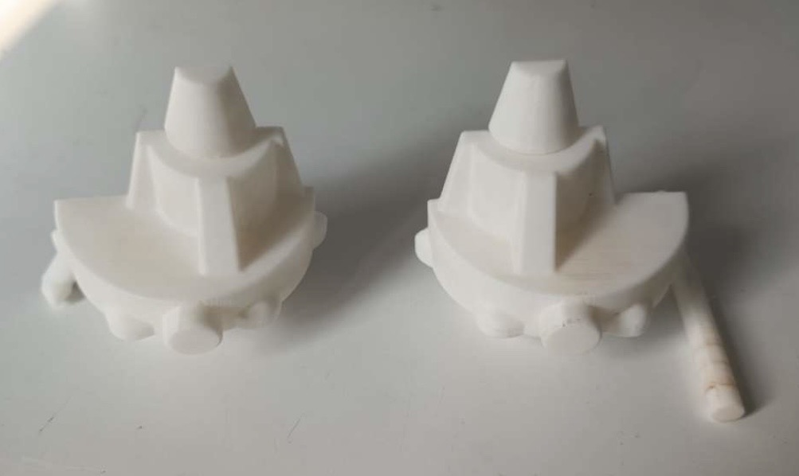
1. Impression 3D (Noyau & Modèle)
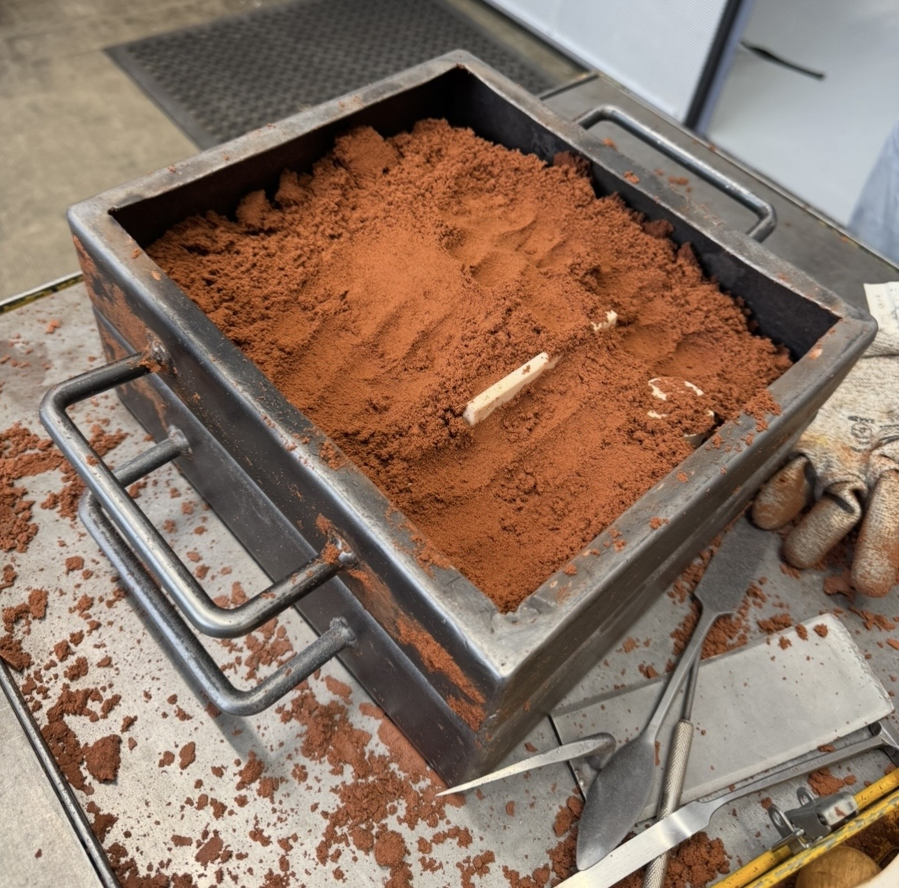
2. Création des moules en sable
3. Pièce brute et usinée
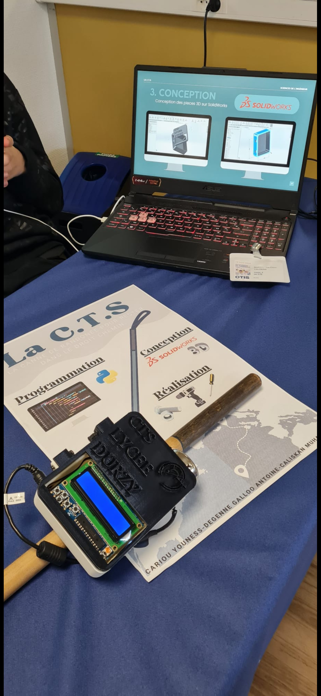
Olympiades de Sciences de l'Ingénieur
1. Contexte
Participation aux Olympiades de Sciences de l'Ingénieur en équipe, avec une soutenance finale devant un jury d'experts chez OTIS.
2. Objectifs
Concevoir de zéro et mettre au point une invention technique innovante (prototype fonctionnel) sur plusieurs mois.
3. Cahier des charges
Respecter des contraintes strictes de budget, de délais et de faisabilité technique, tout en proposant un produit répondant à un besoin précis.
4. Bilan et difficultés rencontrées
Le principal défi a été la coordination de l'équipe et la résolution des imprévus techniques lors de l'assemblage physique du prototype.
5. Analyse et réflexion
Cette expérience très formatrice a confirmé mon attrait pour la gestion de projet, l'innovation et le travail collaboratif en ingénierie.
Expériences Professionnelles
Rédacteur Technique / Intégration Bureau d'Études
Stage de 11 semainesLigier Automotive — Amilly
- Création intégrale des documents d'utilisation d'un véhicule de compétition à destination de la clientèle.
- Participation active au bureau d'études : conception, modélisation de pièces, assemblages 3D, plans et éclatés techniques.
- Contribution à l'évolution du système d'archivage technique de l'entreprise.
- Immersion complète de la chaîne automobile : du bureau d'études jusqu'aux tests sur piste, en passant par le travail en atelier.
Immersion Chantier Naval de Plaisance
StageComptoir Nautique — Marzan
- Travail en équipe sur les opérations de manutention : grutage et hivernage des voiliers et bateaux à moteur.
- Maintenance technique des coques et carénage.
- Participation à la gestion du magasin d'accastillage.
Compétences, Langues & Qualités
📐 Compétences Techniques
🌍 Langues
🤝 Qualités
Centres d'Intérêts
Automobile de compétition & Sport mécanique
Passion pour les hautes technologies, la mécanique de précision et les stratégies de course au plus haut niveau.
Cultive la rigueur, le sens de l'optimisation et la gestion de la pression. L'exigence du sport automobile implique une recherche constante de performance, d'innovation technologique et un fort esprit de cohésion.
Cinéma
Intérêt prononcé pour le 7ème art, l'analyse filmique, la réalisation et la narration visuelle.
Développe la créativité, l'attention aux détails et l'esprit d'analyse. Comprendre la vision d'un réalisateur permet d'appréhender des projets complexes avec une perspective globale.
Curriculum Vitae
Retrouvez ci-dessous l'aperçu complet de mon curriculum vitae. Vous pouvez également le télécharger directement au format PDF.
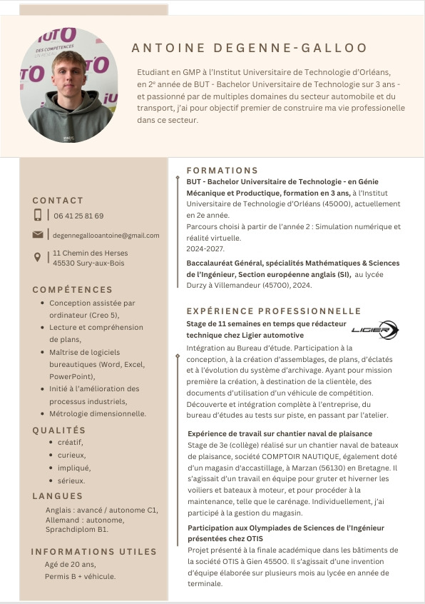
Me Contacter
45530 Sury-aux-Bois